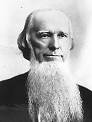

|

|

|
|
|
Businessman, four-term Governor of Georgia (1857-1865),
chief justice of the Georgia Supreme Court (1868-1870), and
United States Senator (1880-1891), Joseph Emerson Brown was born
April 15, 1821 in Long Creek, South Carolina to Mackey and
Sally Rice Brown. When Joseph was in his early youth, the
family moved to Union County in the north Georgia mountains.
He attended Calhoun Academy in South Carolina and upon
graduation became a teacher and undertook a private study of
the law, and in 1845 gained admission to the Georgia bar.
In 1846, he graduated from Yale Law School.
Brown practiced law in Canton, Georgia throughout the
1840s and early 1850s. During this time, he also began a
career in politics, serving as a Georgia State Senator and
as a judge of the Blue Ridge Circuit. In 1858, Georgia's
Democratic Party, hopelessly deadlocked after more than a
dozen ballots, nominated Brown as a compromise candidate for
governor. Although unknown outside of the north Georgia
mountains, his folksy image appealed to a broad segment of
the population, and he won election by 10,000 votes.
He quickly established a reputation as a stern,
resourceful leader with impressive managerial skills. A
strong states rights advocate, Brown became ardently
secessionist upon the election of Abraham Lincoln. He
appealed to non-slaveholders by arguing that the end of
slavery would place blacks and poor yeoman whites in direct
competition. Brown argued that blacks, desperate to make a
living outside the boundaries of slavery, would sell their
labor more cheaply than whites. As a result, he claimed,
white workers would be reduced to the level of dependent
tenants of the wealthy landowning class.
Brown worked hard to prepare Georgia for war by ordering
munitions, seizing Federal facilities within the state, and
using funds borrowed from banks to establish coastal
defenses, purchase gun making supplies, and erect factories
for making shoes, clothing, and blankets. His devotion to
the state led to early and regular conflicts with the
central Confederate government in Richmond, Virginia. The
conflicts emerged over a variety of issues such as troop
recruitment, the election of officers, conscription, the
suspension of habeus corpus, taxes, and confiscation of
private property without compensation. By 1863, he went so
far as to call the resignation of Confederate President
Davis.
After the War, Brown remained an important figure in
Georgia politics by adapting to the realities presented by
Union victory. He became a Republican, supported both
Presidential and Congressional Reconstruction, and urged
Georgians to accept the 14th Amendment. Just as
importantly, Brown worked hard to bring Northern
businesses--mining and railroad companies--to Georgia to
help repair his state's ravaged economy. In the process, he
became wealthy himself. When Republican rule ended, Brown
reentered the Democratic Party. He emerged as one of the
state's most influential leaders, forming an alliance with
John B. Gordon and Alfred Colquitt known as the "Bourbon
Triumvirate." The three dominated Georgia politics during
the 1880s and 1890s, allowing Brown to be elected to the
U.S. Senate in 1890. He died on November 30, 1894 in
Atlanta, Georgia.
Source: Joan Waugh, ed., Facts on File Encyclopedia of American
History: Civil War and Reconstruction, 1856 to 1869 (New York: Facts on
File, 2003), 39.
|